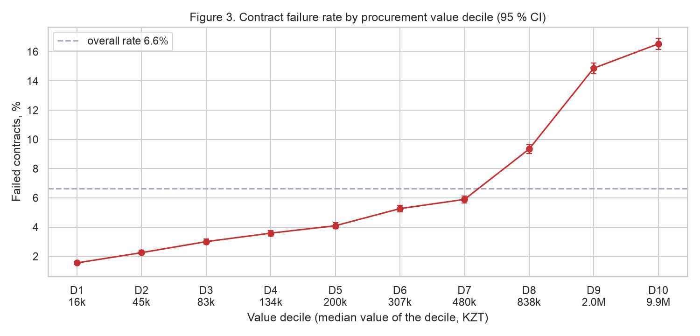
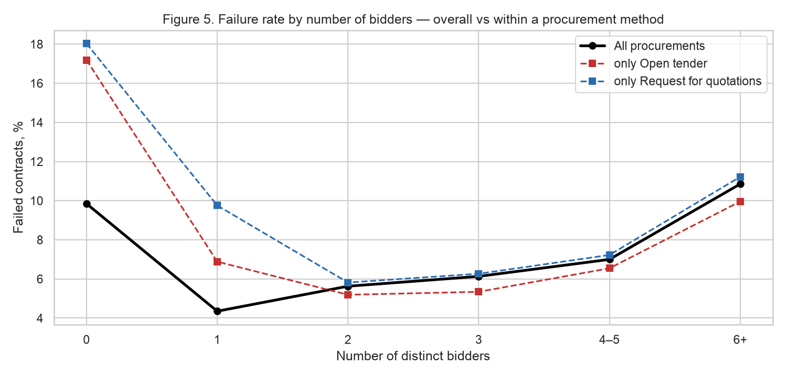

Kazakhstan's e-procurement portal handles about 1.8 million procurements a year. Some of the resulting contracts are terminated or never signed, which forces repeated procedures, delays delivery and wastes public money. Oversight bodies can audit only a small fraction of procurements, so they need to know in advance where failures are likely. Existing risk-scoring approaches rely mostly on expert "red flags" such as single bidding (Fazekas et al., 2016; Fazekas & Kocsis, 2020). This study asks which characteristics known at the moment of award are associated with contract failure (RQ1: method and competition; RQ2: value, subject, region) and whether they predict failure on a later period (RQ3).
The data come from the official open-data API of the portal (OWS v3, Ministry of Finance of the Republic of Kazakhstan). All 630,762 procurements published between 1 January and 31 March 2024 were collected together with their 1.29 million lots, 1.07 million supplier applications, 556 thousand contract records and the register of unreliable suppliers (RNU). Q1 2024 was chosen so that every contract has had more than two years to reach a final status. The raw snapshot is published as a GitHub release, which makes the notebook fully reproducible without an API token.
Data quality was assessed per table (missing values, duplicates, wrong types, invalid values, outliers, inconsistent categories, referential integrity). The key cleaning step was collapsing contract amendments: 13.6 % of contract rows are later versions of the same contract, and only the last version carries the final status. The unit of analysis is a procurement that produced at least one contract (n = 358,789). The target contract_failed equals 1 if any of its contracts ended as terminated (unilaterally or by agreement) or not concluded. Twenty features describing the procedure, its value, lots, competition and organiser were built using information available at award time only; a leakage audit excluded execution fields, system timestamps, procurement final status and the RNU register, whose entries are a consequence of termination (Kaufman et al., 2012). Data were split chronologically (train: Jan–Feb, validation: 1–15 Mar, test: 16–31 Mar; 74/15/11 %). A class-weighted logistic regression served as the baseline; because classes are imbalanced, it was evaluated with ROC-AUC, PR-AUC and F1 (Saito & Rehmsmeier, 2015).


| Model (test period, 16–31 March 2024) | ROC-AUC | PR-AUC | F1 | Precision in top 1 % |
|---|---|---|---|---|
| Prior classifier (no model) | 0.500 | 0.066 | — | 0.057 |
| Logistic regression (class-weighted, threshold tuned on validation) | 0.792 | 0.262 | 0.324 | 0.504 |
The sample covers a single quarter, so seasonal effects are not represented. The label combines supplier failures with customer decisions (termination by agreement); a strict variant is stored for sensitivity analysis. Track records of suppliers and organisers cannot be used without leakage because the termination dates of earlier contracts are not observed. About 16 % of procurements have no priced offers and some offers use inconsistent units. The findings are associational, not causal.
Contract failure in Kazakhstan's procurement is neither rare nor random: it concentrates in large, goods-type, lowest-price procedures and in the largest cities, and it depends on competition in a U-shaped way. The popular "single bidder" red flag is meaningful only relative to the procurement method. Information available at award time already ranks risky procurements far better than chance, which justifies the next stage of the project: tree-based models able to capture the interactions found here, and text features from lot descriptions.
Fazekas, M., & Kocsis, G. (2020). Uncovering high-level corruption: Cross-national objective corruption risk indicators using public procurement data. British Journal of Political Science, 50(1), 155–164.
Fazekas, M., Tóth, I. J., & King, L. P. (2016). An objective corruption risk index using public procurement data. European Journal on Criminal Policy and Research, 22(3), 369–397.
Kaufman, S., Rosset, S., Perlich, C., & Stitelman, O. (2012). Leakage in data mining: Formulation, detection, and avoidance. ACM Transactions on Knowledge Discovery from Data, 6(4), 1–21.
Ministry of Finance of the Republic of Kazakhstan. (2026). Public procurement portal — open data API (OWS v3). https://ows.goszakup.gov.kz (accessed 6 October 2026).
Saito, T., & Rehmsmeier, M. (2015). The precision-recall plot is more informative than the ROC plot when evaluating binary classifiers on imbalanced datasets. PLoS ONE, 10(3), e0118432.
Thaler, R. H. (1988). Anomalies: The winner's curse. Journal of Economic Perspectives, 2(1), 191–202.